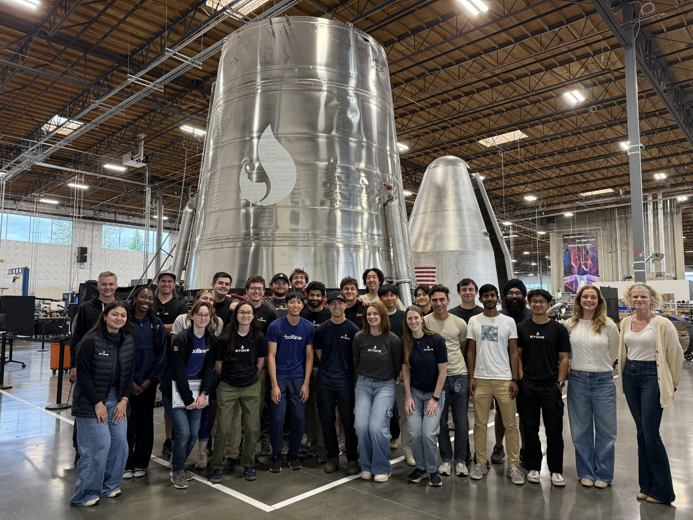

<html>
    <head>
            <title>  Rohan Shah's Portfolio </title>  
            <style>
                .responsive-img {
                max-width: 80%;   
                max-height: 600px; 
                height: auto;     
                width: auto;
                display: block;
                margin: 0 auto;
                }
                .responsive-imgwide {
                max-width: 100%;   
                height: auto;     
                width: auto;
                display: block;
                margin: 0 auto;
                }
                .responsive-video{
                max-width: 80%;   
                max-height: 600px; 
                height: auto;     
                width: auto;
                display: block;
                margin: 0 auto;
                
                }
              </style>    
    </head>
</html>

<body>
    <h1>Rohan Shah</h1>
    <p>Please note this site is currently a work in progress. I am still in the process of adding images and videos of my projects and polishing the site. I hope it is still informative in the interim.</p>
    <h2>About Me</h2>
    <p>My name is Rohan Shah and I am excited to work at the intersection of robotics, energy, and areospace.
        Ever since I was a kid, I have been inspired by science fiction and NASA to dream of the stars. I believe that the future is bright, but only if we build it.  
    I also love to sail and dream of sailing the Mediterranian. I have recently started hiking at the behest of some friends and have now spent a summer hiking in the Whites of New Hampshire and the Cascades/Olympics in Seattle. My favorite peak was Mt. St Helens. Looking down into the crater was a strange and awe inspiring site.</p>
    
    <h2>Work Experience</h2>
    <h3>Stoke Space Avionics Intern - Summer 2025</h3>
        <p> At Stoke I was tasked with designing a HIL Simulator of
             an Electronic Safe and Arm Device for FTS to verify our FTS system on the ground,
            and to pave the way for a flight in house ESAD. 
             The ESAD is responsible for arming, safing, and triggering the Bulk Destruct Charge which is responsible for terminating thrust in the rocket in the case of an anomly to safegaurd the public.
            This requires a high voltage, high current pulse (1000V 1000A) to be delivered with a rise time of less than 100ns. This was the core challenge of the project, requiring careful part selection
            and layout to create an low inductance firing path, while standing off low-voltage electronics. The board also contained discrete logic to trigger the firing, safing and arming circuit. These
            logic systems were built with simple logic gates to reduce power consumption and remove firmware.
            The project required that I get up to speed with FAA/Range requirements in the form of RCC-19 along with the accompanying tailoring documents. By the end of the internship I had succesfully
             brought up a Rev 0 board spin verifying the digital logic systems and succesffully creating the high voltage pulse. I am currently contracting with Stoke this Fall to design another revision of this board to bring it to flight standards.
        </p>
        
    <h2>Portfolio</h2>
    <h3>Current Projects</h3>
    <h4>Chimera</h4>
    <p>I am currently working on a small beetleweight combat robot. I have been designing the robot in my spare time and hope to compete at NHRL late this year or early next year.
        Chimera is a lifting-flamer robot that I am designing with fully custom electronics. I am desinging off-meta because my primary interest is to build for fun, not to build a particularly competitive robot.
        The PCB and electronics were designed in Ki-Cad. I am currently bringing these first development boards up. I have started manufacturing the mechanical components of the robot, with wheels, axles, and other systems being produced. 
    </p>
    <figure>
        
        <figcaption>Render of Custom Circuit Board for Chimera</figcaption>
    </figure>

    <h3>Past Projects</h3>
    <h4>Thorondor</h4>
    <p>In the fall of my sophmore year, I took a class called Principles of Integrated Engineering. 
        In the classs we were given 6 weeks and 250 dollars to build an integrated engineering project on a team of 5.
        My team decided to attempt to build a RC bi-copter inspired by the V-22 Osprey. I worked on the eletrical systems and 
        helped design the control algorithms. By the end of the 6 weeks we built a drone that could achieve stable flight for a few seconds before pitching out of control
        This was due to our control loop being constrained to 200hz as our budget limited us to using a RP2040 based microcontroller. One of our final deliverables for the 
        class was to make a <a href="https://olincollege.github.io/pie-2024-03/pi-pielots/">website<a> highlighting the project.
        This project was a lot of fun and challenged every member of the team. At some point I want to upgrade the avionics with a Teensy to allow for stable flight.
    </p>
    <figure>
    <video class = "responsive-video" controls>
        <source src="media/flight.mp4" type="video/mp4">
      Your browser does not support the video tag.
      </video>
      <figcaption>Test Flight of Thorondor while in a safety harness.</figcaption>
    </figure>
    <figure>
        <video class = "responsive-video" controls>
            <source src="media/pitchtest.mp4" type="video/mp4">
          Your browser does not support the video tag.
          </video>
          <figcaption>Iron Bird testing stabilization in the pitch axis</figcaption>
        </figure>
    <h4>Olin Rocketry</h4>
    <h4>SailTracker</h4>
    <p>
        Since high school I have sailed dinghies competively. Much of competitve racing revolves around small optimizations to keep speed through manuvers. 
        Many larger boats are equiped with position and velocity tracking systems that allow racers to tune their preformance. I was inspired by these to 
        try to develop my own sailtracker. I designed my first PCB in Ki-Cad after prototyping the system on a breadboard and learned about the math behind Kalman Filtering.
        I brought the board up, reworked some problems with the board, and wrote firmware in C++.
    </p>
    <h3>Academics</h3>
    <p>I am currently a Junior at the Olin College of Engineering Studying Electrical and Computer Engineering.
        In addition to my major, I am taking a humanties concentration in Philosphy. I expect to graduate in the spring of 2027.</p>
    <h4>Current Course Load: Mixed Analog Digital VLSI, Probablistic Modeling, Thermodynamics, Introduction to Methaphysics and Epistimiology</h4>
    <h3>Previous Course Work</h3>
    <p>These are a few of the courses I have taken in the last 2 years that I have learned a lot from and that I have enjoyed.</p>
    <h3>Introduction to Micro Electronic Circuits</h3>
    <h4>Skills: Circuit Analysis, LTspice, Analog Design/Analysis</h4>
    <p>In this class I learned the basics of micro electronics with a
     focus on analog design and hand analysis. The course covered BJT's
     and MOSFETS in all regions of operations. The class was lab based,
     with weekly assignments that involved using hand calculations to
     predict the behavior of a circuit, building and testing the circuit,
     and then extending the circuit in simulation. For my final project 
     I attempted to construct a True Random Number Generator using a 
     bistable element circuit. Unfortunately I was unable to generate
     random behavior due to poorly matched components and a poorly 
     controlled testing setup. My final writeup is:<a href="https://olincollege.github.io/pie-2024-03/pi-pielots/">linked here<a></a>
    </p>
    <h3>Computer Architecture</h3>
    <h4>Skills: Verilog, Automated Verification, FPGA, Digital design</h4>
    <p>Computer Architecture walked from logic gates to designing a RISC-IV processor.
        During the class we used a ICE-0 FPGA Dev Board to complete a series of 
        mini-projects covering the basics of implementing state machines,
        fetches from memory, and counters. For the final mini-project we were
        tasked with designing a RISC-IV processor. I designed a processor with a 
        Harvard Architecture. Here is a picture of the block diagram I used to
        develop my processor. I developed automatic test benches in System Verilog
        to verify the function of the processor. For my final project I developed
        a memory mapped soft UART core for the processor and tested it in simulation.
        All of the development files can be found on my <a href="https://github.com/Rshah2067/Comp-Arch-Spring-2025">github<a></a>.
        <figure>
            
            <figcaption>Simulation of RISC-IV Processor stepping through a set of calulations</figcaption>
        </figure>
        <figure>
            
            <figcaption>Simulation of memory mapped UART module transmitting a message</figcaption>
        </figure>
    </p>
    <h3>Advanced Systems Programming In Rust</h3>
    <h4>Skills: Rust, Firmware Development</h4>
    <p>In this class I learned Rust and some of it's fun quirks (generics, the borrow checker, unsafe).
        I really enjoyed learning the language, and now use RUST as my main Programming
        language for larger projects. The class also allowed me to try out Rust firmware, specifically
        for the RP2040. For my final project I partnered with another student to create
        a rudimentery HIL testing setup. We used a RP2040 to act as a flight Computer
        with another RP2040 acting as a HIL tester, mocking accelerometer data for the flight computer.
        The HIL unit communicated with a laptop running a physics simulation to create fake data.
        I worked on the firmware for both the HIL unit and the mock Flight Computer, while my partner developed
        the Physics Engine. <a href="https://github.com/Rshah2067/aspirin-2024-03">Here<a></a> is a link to the github page for the class.
    </p>

</body>